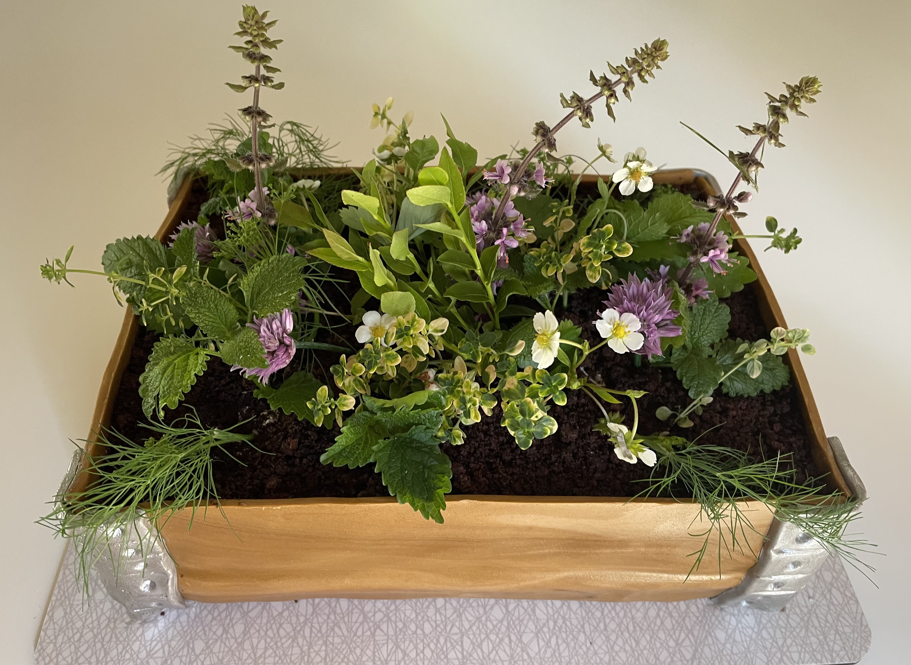
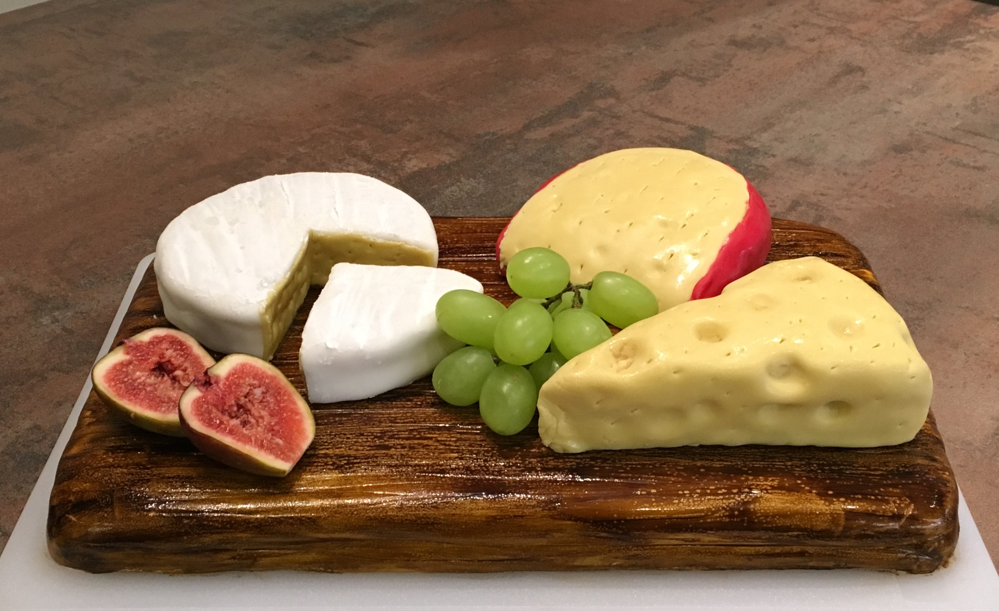
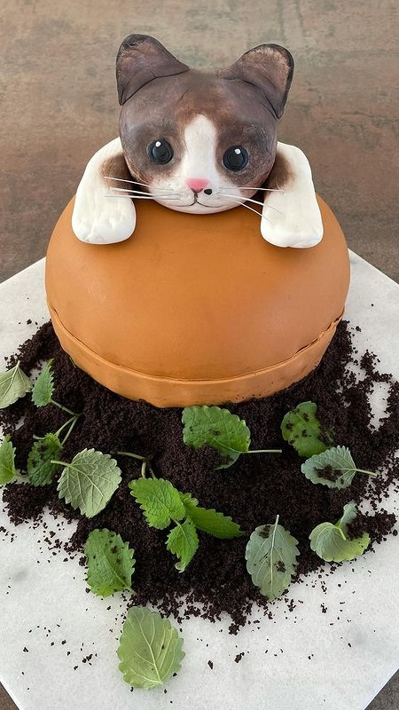

Tervetuloa nettisivuilleni! Täällä voit ihailla minun leivonnaisiani tai hakea inspiraatiota omiisi.
Kakkuteesit

Ensimmäinen teesi
Tässä kakussa kiteytyy kakkuharrastukseni ydinajatus:
”Kakun tulee näyttää ihan joltain muulta kuin kakulta ja kaikki kakussa on oltava syötävää.”
Tämä mango-aprikoositäytteinen kakku on tehty kesäiseen kahvipöytään. Kakun koristeina on yrttejä ja syötäviä luonnonkukkia suoraan mökkipihasta.

Toinen teesi
Tässä kakussa puolestaan kiteytyy toinen minulle tärkeä tavoite:
”Kakun tulee olla hauska ja sen on tuotava hämmästynyt hymy syöjänsä kasvoille.”
Tämä leikkuulauta juustoineen on vaaleaa kakkua lakkatäytteellä. Tässäkin kakussa kaikki on syötävää, myös leikkuulauta.

Kolmas teesi
Viimeisenä, mutta ei lainkaan vähäisimpänä tavoitteena on tehdä hyvänmakuisia kakkuja.
”Kakun tulee olla kahvipöydän keskipiste ja sen tulee olla herkullista.”
Tällä läpeensä suklaisella kakulla juhlistettiin kissamme Mollan syntymäpäivää. Inspiraation lähde ja päivänsankari itse ei kylläkään osallistunut kakun maisteluun.